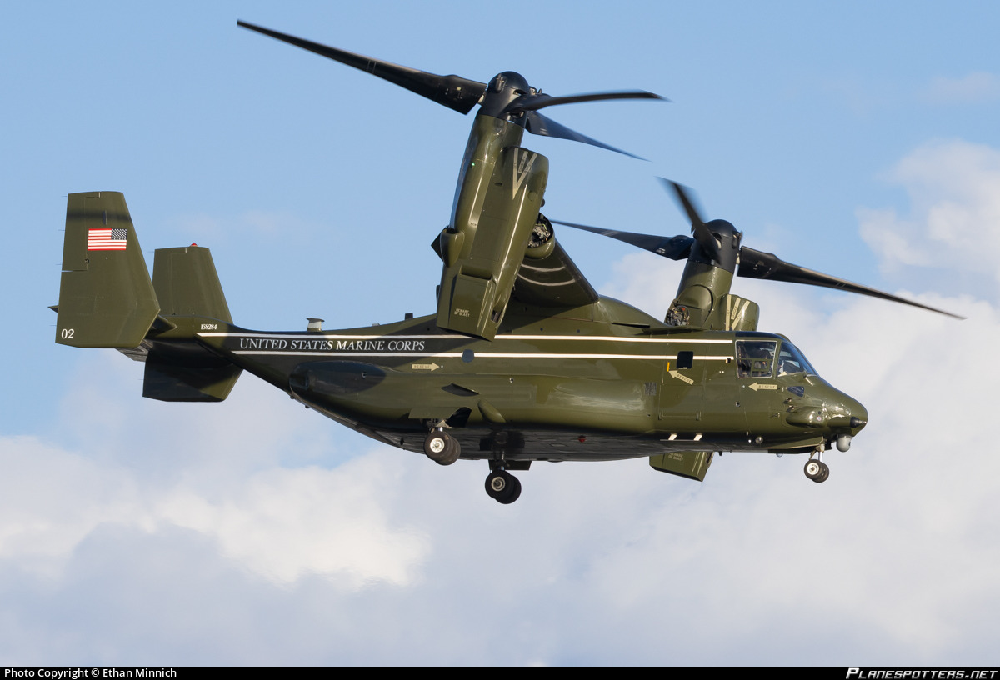

Wave of World Leaders Expected to arrive at JFK for UNGA #80
Photo credit: Ethan Minnich
Published September 1, 2025
From September 20th to the 29th, (VIP begin arrriving Sep 6-12) 2025, New York City turns into one of the most exciting places on earth for planespotters. Whether you’re at JFK, Newark, LaGuardia, or even smaller airports like Farmingdale, this is the time when the skies are filled with aircraft you won’t normally see. The United Nations General Assembly brings leaders from all over the world, and with them come rare government aircraft, military cargo planes, and VIP aircraft that instantly turn the city’s airports into a global aviation hotspot.
JFK, of course, is the main stage. For a little over a week, it feels less like a commercial airport and more like a joint military and government hub. Each day feels like a lottery because you never know which nation’s aircraft will arrive next. For spotters, it’s the kind of week you dream about all year long.
But it isn’t just JFK. The whole region lights up. Teterboro, Newark, LaGuardia, and Farmingdale all play a part in the action. Smaller business jets and support flights often head there instead of JFK, so if you’re willing to move around, you’ll get to see some aircraft that never come back to the U.S. once they leave. Every airport has its own surprises, which makes the chase even more exciting.
The atmosphere during UNGA week is unlike anything else. Security is tighter, military aircraft are more active, and the mix of planes is something you won’t find at any other time in New York. It’s a strange but amazing sight seeing military operations and government happening right alongside your normal commercial traffic. It’s almost like New York’s airports become temporary military hotspot, just for this short burst of time.
For aviation fans, this is as good as it gets. The variety, the rarity, the pure unpredictability of it all, everything comes together to make spotting during the UN General Assembly unforgettable. For those few days in late September, New York really does feel like the center of the aviation world.
The first to arrive to JFK for UN Week was a United States Air Force Boeing C-17A Globemaster III!
Here are the flight logs for the aircraft that have landed at JFK for UN Week.
September 6, 2025 - United nations General Assembly
The Boeing C-17A Globemaster III was bringing support and equipment for the president, indicating a visit soon to JFK, during this event. For the first day of UN Week, this is an amazing start!